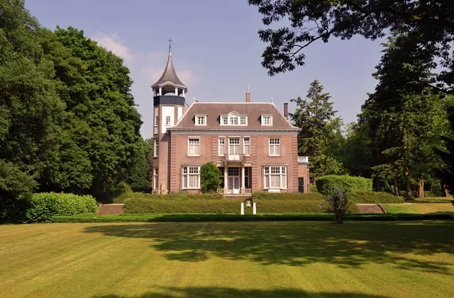

Nieuws ·
Loop mee tijdens de rondleiding in Kwakkenberg op zondag 24 maart

De villawijk Kwakkenberg ligt in een bijzonder deel van Nijmegen, in het meest bosrijke deel van de stad. De ruime stedenbouwkundige opzet van de wijk biedt veel ruimte voor prachtige villa’s, statige instituten en riante tuinen. Tijdens deze rondleiding neemt stedenbouwkundige Kees Teeken je mee langs de architectonische parels in Kwakkenberg, op uitnodiging van Architectuurcentrum Nijmegen (ACN).
Villawijk Kwakkenberg
De ruime opzet van Kwakkenberg trok door de jaren heen bewoners aan en dat is in het straatbeeld duidelijk te zien. We lopen langs de villa Westerhelling van Oscar Leeuw, met een parktuin van tuinarchitect Leonard Springer, en bekijken het later gerealiseerde internaat de Westerhelling. Ook wordt tijdens de rondleiding veel aandacht besteed aan het kinderherstellingsoord Villandry, met een verwijzing naar de architectuur van de legendarische Frank Loyd Wright en kenmerken van de Amsterdamse School.
Over de rondleider
Kees Teeken is stedenbouwkundige en rondleider bij ACN, en was voorheen werkzaam bij gemeente Nijmegen. Tijdens de rondleiding door vertelt hij alles over de architectuur en het stedenbouwkundig ontwerp van Kwakkenberg en laat hij verborgen plekken zien in dit bosrijke deel van Nijmegen.
Meer informatie en tickets: https://www.architectuurcentrumnijmegen.nl/single-post/rondleiding-kwakkenberg
Datum: zondag 24 maart 2024
Tijd: 11.00 uur – 12.30 uur
Start: Villandry, Bosweg 160 Nijmegen
Kosten: € 7,50 p.p. | studenten €2,50